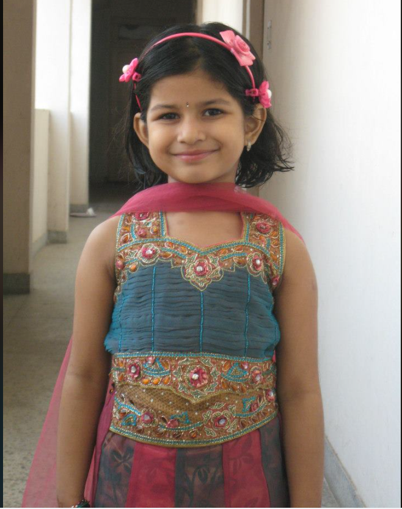

This is where my love and appreciation for Indian culture started, well as much as I could process at that age. My first wedding. Seeing a hall full of people in the moutains filled with flowers and a view of the Himalyas, eating 5 kinds of mithais and every chaat possible really is a key moment in a young kid's life.